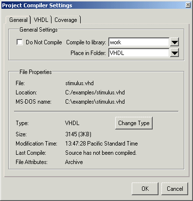

Adding a Project Folder
Project folders
are similar to directories in that they are containers that allow
you to organize multiple levels of folders and sub-folders. However,
no actual project directories are created in the file system—the
folders are present only within the project file.
Procedure
Examples
For example, when you add a file, you can select which folder to place it in.
Figure 2. Specifying a Project
Folder

If you want to move a file into a folder later on, you can do so using the Properties dialog box for the file. To display this dialog box, right-click on the filename in the Project window and choose Properties from the context menu. This opens the Project Compiler Settings dialog box (Figure 3). Use the Place in Folder field to specify a folder.
Figure 3. Project Compiler Settings
Dialog Box

On Windows platforms, you can also just drag-and-drop a file into a folder.